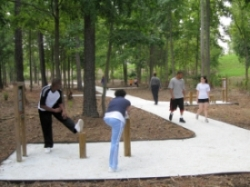

Home • Contact Us • Site Map

Home • Contact Us • Site Map

Today is the age of the active American. Health conscious men, women and children are more concerned with physical fitness than ever before. Researchers and educators have created an awareness which spans generations and encompasses all sectors of our nation. Nowhere is this movement more evident than in the growth and popularity of Fit-Trail fitness systems.
In the early 1970's, Fit-Trail was a pioneer in the introduction and development of the fitness trail concept in America. Today, there are over 2,000 Fit-Trail exercise systems in use in the US and around the world.
Like the Swiss ancestor Parcourse, fitness trails combine scientifically designed exercises with walking or jogging to provide a well-balanced physical fitness routine for the entire body. Individual exercise stations with apparatus are spaced along a walking trail or jogging path. The participant proceeds from one exercise station to the next and performs the exercises illustrated at each station.
For those with a limited amount of space, exercise stations can be grouped together in small clusters.
Fit-Trail's phenomenal growth and popularity is a reflection of its versatility and endless applications. Fit-Trail systems are a fun way to motivate and encourage people to reach their fitness goals.
These systems are recognized by the President's Council on Physical Fitness and Sports as "an ideal resource for communities and agencies dedicated to improving the health and fitness of Americans." Communities across the country have installed Fit-Trail fitness systems to market and promote a variety of related programs and facilities.
Since 1978, SouthWood Corporation has been the sole manufacturer of Fit-Trail. SouthWood is a custom architectural signage and graphics firm located in Charlotte, North Carolina. SouthWood began as a manufacturer of wood signage and products for the specifier market and was a natural fit for the timber fitness equipment of Fit-Trail. Although the breadth of our custom signage materials and methods has broadened greatly over the last 40 years and our clients extend well beyond those of the specifier markets, SouthWood continues to produce Fit-Trail systems, shipping over 2,000 units since its inception.
For more information on SouthWood, visit our website.